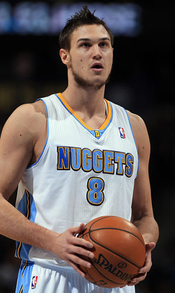

|  |
Матчи |
59 |
|
Передачи (всего/среднее) |
83 |
1.4 |
| В основе |
27 |
|
Подборы в защите (всего/среднее) |
187 |
3.2 |
| Время (всего/среднее) |
1425:52 |
24:10 |
Подборы в атаке (всего/среднее) |
31 |
0.5 |
| Очки (всего/среднее) |
734 |
12.4 |
Подборы (всего/среднее) |
218 |
3.7 |
| 2-очковые броски (всего/среднее) |
121/267 |
2.1/4.5 |
Перехваты (всего/среднее) |
47 |
0.8 |
| 2-очковые броски (% реализации) |
45.3% |
|
Потери (всего/среднее) |
57 |
1 |
| 3-очковые броски (всего/среднее) |
107/301 |
1.8/5.1 |
Блокшоты (всего/среднее) |
20 |
0.3 |
| 3-очковые броски (% реализации) |
35.5% |
|
Блокшоты соперника (всего/среднее) |
33 |
0.6 |
| Штрафные броски (всего/среднее) |
171/191 |
2.9/3.2 |
Фолы (всего/среднее) |
94 |
1.6 |
| Данило Галлинари |
Штрафные броски (% реализации) |
89.5% |
|
Коэффициент полезности (всего/среднее) |
558 |
9.5 |